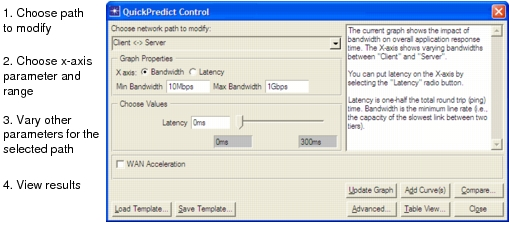

Using QuickPredict The following figure shows the basic QuickPredict Control window, which you open by choosing Simulation > QuickPredict. The idea of QuickPredict is to vary the parameters for a network path and then click Update Graph to see how the variations affect the application response time (y axis on the resulting graph). Figure 22-1 QuickPredict Control—Basic Dialog Box  The X-axis radio buttons determine which of the available parameters (Bandwidth or Latency) will form the x axis in the resulting graph. You can then modify the non-x-axis parameter using the edit field or the slider.